Deine Wege
Zwei Retreats in der Toskana
Tauche ein in die zauberhafte Natur der Toskana und finde Deine innere Klarheit
Zwei Wege, die sich ergänzen und doch einzigartig sind
Jetzt anmelden
Zwei Wege, eine Haltung
Für mehr Leichtigkeit und Klarheit in Deinem Leben.
Erlebe die Toskana auf zwei besondere Arten: Ein intensives Coaching-Retreat für tiefgehende persönliche Entwicklung oder ein achtsames Walking-Retreat für Körper und Geist. Beide Wege führen Dich zu Dir selbst – in der zauberhaften Natur der Toskana.
Was beide Retreats verbindet: Eine erfahrene systemische Therapeutin und Coach begleitet Dich, kleine Gruppen schaffen einen vertrauten Rahmen, und märchenhafte toskanische Orte sowie entspannendes Wellness in der Saturnia Therme runden das Erlebnis ab.
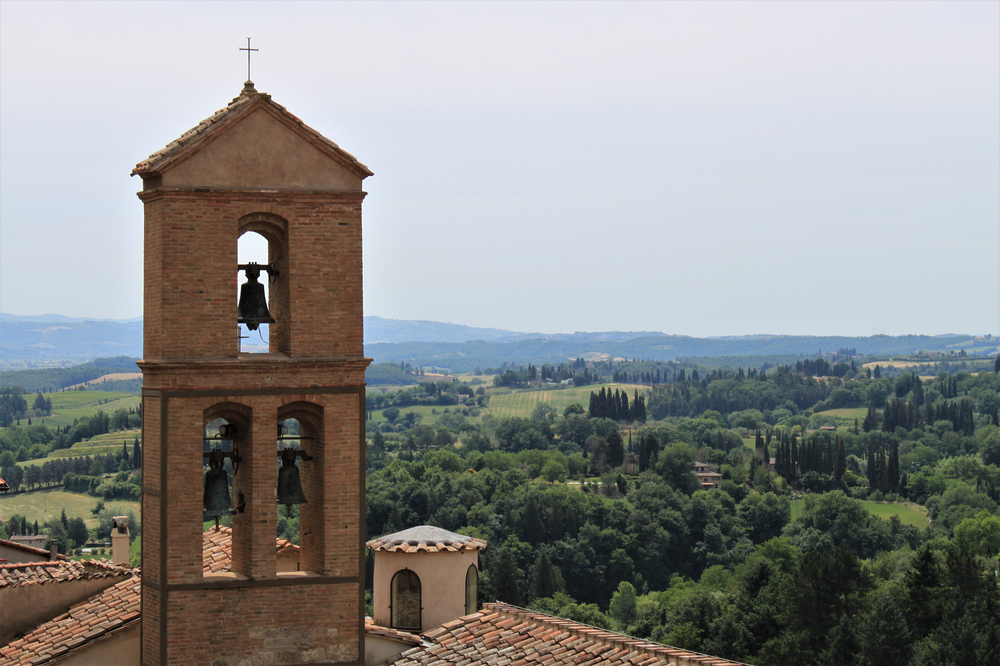
„Finde Deinen Weg!"
5-tägiges Intensivcoaching-Retreat
Ein tiefgehendes Coaching-Erlebnis in kleiner, persönlicher Gruppe (max. 4 Personen).
Erlebe intensive Einzelcoachings und kraftvolle Impulse, die Dich auf Deinem individuellen Lebensweg voranbringen. In der inspirierenden Umgebung der Toskana schaffen wir einen geschützten Raum für transformative Erkenntnisse.
Termin: 29. April – 3. Mai 2026
Teilnehmer: maximal 4 Personen
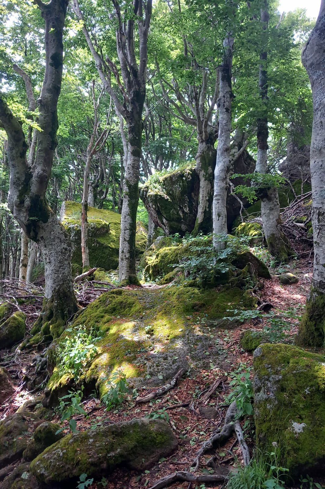
Tiefgehende Einzelcoachings
Individuelle Sessions, die genau auf Deine Bedürfnisse zugeschnitten sind
Kleine Gruppe
Maximal 4 Teilnehmer für intensive, persönliche Betreuung
Kraftvolle Impulse
Systemisches Coaching kombiniert mit der Kraft der toskanischen Natur
Nachhaltige Veränderung
Praktische Werkzeuge für Deinen individuellen Lebensweg
„Folge Deinem Weg"
7-tägiges Walking-Retreat
Ein achtsames Wandererlebnis mit Fokus auf Achtsamkeit und Selfcare (max. 6 Personen).
Genieße das bewusste Wandern auf uralten etruskischen Pfaden, begleitet von sanften Impulsen für mehr Selbstfürsorge und innere Balance. Gemeinsam erkunden wir die toskanische Landschaft, genießen die Ruhe und stärken Körper und Geist.
Termin: 25. – 31. Mai 2026
Teilnehmer: maximal 6 Personen
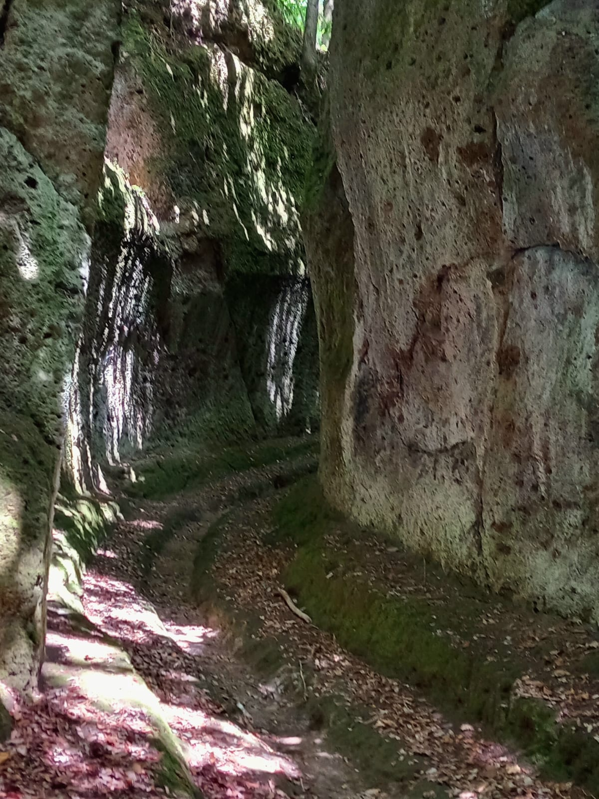
Bewusstes Wandern
Auf uralten etruskischen Pfaden die Natur achtsam erleben
Achtsamkeit & Selfcare
Sanfte Impulse für mehr Selbstfürsorge und innere Balance
Gemeinschaft
In einer Gruppe von maximal 6 Personen gemeinsam den Weg gehen
Körper & Geist
Stärkung durch Bewegung, Ruhe und die Schönheit der Toskana
Was beide Retreats verbindet
Trotz ihrer unterschiedlichen Schwerpunkte teilen beide Retreats wichtige gemeinsame Werte.
Beide Wege werden von einer erfahrenen systemischen Therapeutin und Coach begleitet, die mit Herz und Kompetenz für Dich da ist. Die kleinen Gruppengrößen ermöglichen eine persönliche, vertrauensvolle Atmosphäre.
Die märchenhaften toskanischen Orte bieten eine inspirierende Kulisse für Deine persönliche Reise, während entspannendes Wellness in der berühmten Saturnia Therme Körper und Seele verwöhnt.

Erfahrene Begleitung
Systemische Therapeutin, Supervisorin & Coach mit langjähriger Erfahrung
Kleine Gruppen
Persönliche Atmosphäre durch begrenzte Teilnehmerzahl
Märchenhafte Toskana
Zauberhafte Orte, die die Seele berühren und inspirieren
Saturnia Therme
Entspannendes Wellness in den heilenden Thermalquellen
Beispielhafter Tagesablauf
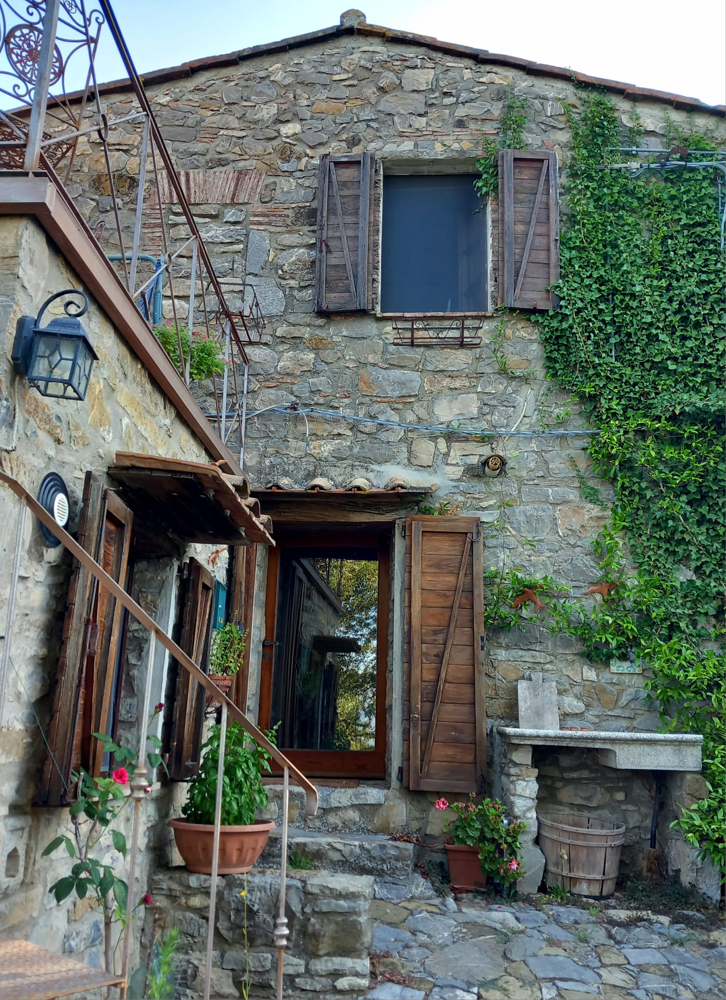
Ankunft & Ankommen
Individuelle Ankunft am ersten Tag
Willkommen in der Toskana! Nach Deiner Ankunft nehmen wir uns Zeit für eine ausführliche Begrüßung und Orientierung. Du lernst die anderen Teilnehmer kennen und erhältst einen Überblick über die kommenden Tage.
Am Abend genießen wir ein gemeinsames Abendessen und beginnen mit einer entspannenden Achtsamkeitsübung, um in die Retreat-Atmosphäre einzutauchen.
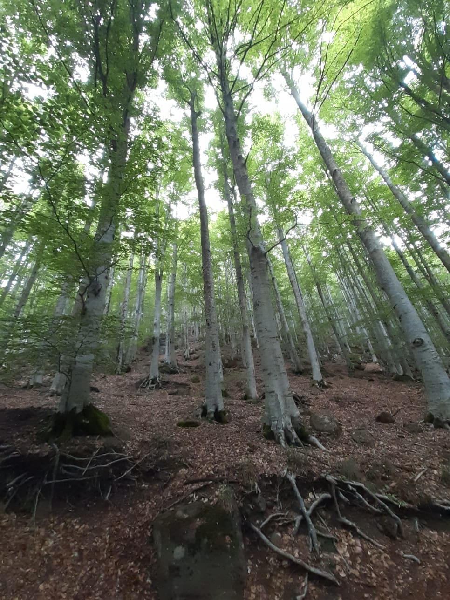
Intensive Retreat-Tage
Strukturierter Tagesablauf mit individueller Flexibilität
„Finde Deinen Weg!" (Intensivcoaching):
- Morgenmeditation und gemeinsames Frühstück
- Individuelle Coaching-Sitzungen (2-3 pro Tag)
- Zeit für Reflexion und Spaziergänge in der Natur
- Gemeinsame Aktivitäten und Austausch
„Folge Deinem Weg" (Walking-Retreat):
- Achtsame Morgenroutine und Frühstück
- Geführte Wanderungen auf etruskischen Pfaden
- Achtsamkeitsübungen und Selfcare-Impulse
- Ausflüge zu märchenhaften Orten und Wellness in Saturnia
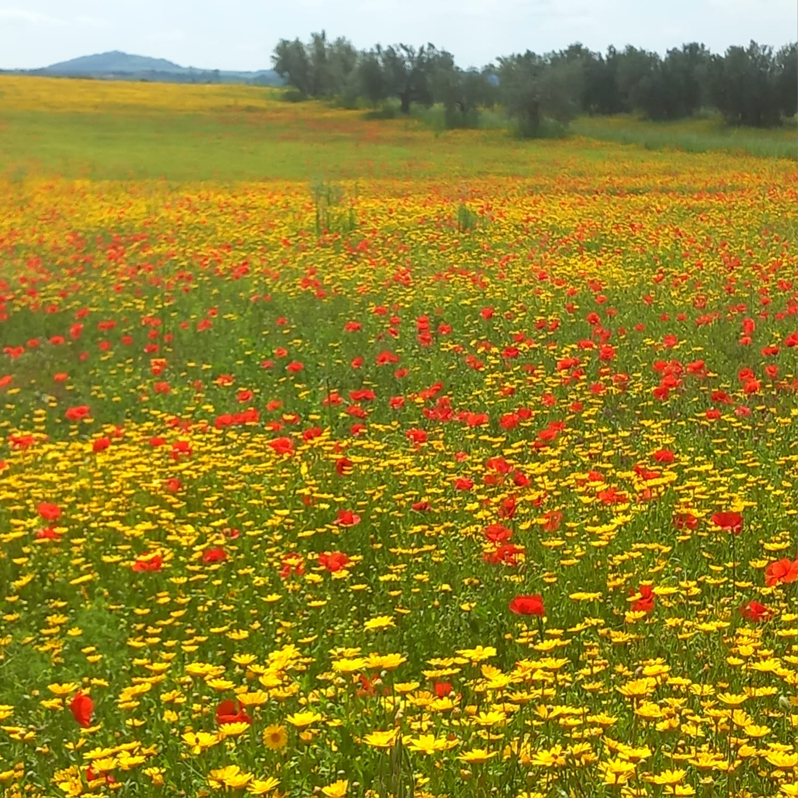
Integration & Abschluss
Reflexion, Integration und Ausblick
Der letzte Tag ist der Integration Deiner Erfahrungen gewidmet. Wir reflektieren gemeinsam die vergangenen Tage und entwickeln konkrete Pläne für die Umsetzung Deiner Erkenntnisse im Alltag.
Du erhältst praktische Werkzeuge und Strategien, um die positiven Veränderungen nachhaltig zu erhalten. Am Nachmittag verabschieden wir uns in einem feierlichen Ritual, bevor Du Deine Heimreise antrittst.
Abreise am letzten Tag
Zusätzliche Highlights
Saturnia Therme
Entspannung in den berühmten heilenden Thermalquellen der Toskana
Etruskische Pfade
Wanderungen auf uralten Wegen mit Geschichte und Magie (beim Walking-Retreat)
Toskanische Orte
Ausflüge zu märchenhaften Dörfern und besonderen Plätzen
Kulinarische Genüsse
Regionale toskanische Küche mit frischen, lokalen Zutaten
Gemeinsame Meditationen
Tägliche Achtsamkeitsübungen zur inneren Ruhe
Individuelle Reflexion
Raum für persönliche Selbstreflexion in der Natur
Was du mitbringen solltest
Mentale Vorbereitung
- Offenheit für neue Erfahrungen
- Bereitschaft zur Selbstreflexion
- Vertrauen in den Prozess
- Respekt gegenüber Dir und anderen
Praktische Dinge
- Bequeme Kleidung für drinnen und draußen
- Wetterfeste Jacke und festes Schuhwerk
- Wanderschuhe (besonders für Walking-Retreat)
- Badesachen für die Therme
- Schreibmaterial für Notizen
- Wasserflasche
Was du nicht brauchst
- Keine Vorkenntnisse erforderlich
- Keine spezielle Fitness nötig
- Keine Meditationserfahrung notwendig
- Keine Perfektion – nur Authentizität
Die Location in der Toskana
Ein idyllisches Retreat-Haus inmitten der toskanischen Natur, fernab vom Alltagsstress.
Unsere Location in der zauberhaften Toskana bietet die perfekte Umgebung für intensive persönliche Entwicklung. Umgeben von sanften Hügeln, alten Wäldern und der typisch toskanischen Landschaft, kannst Du Dich vollständig auf Dich selbst konzentrieren.
Das Haus verfügt über gemütliche Zimmer, einen großen Gemeinschaftsraum und eine wunderschöne Terrasse mit Blick auf die märchenhafte Landschaft. Die Küche ist mit frischen, regionalen toskanischen Produkten ausgestattet.
Umgebung & Aktivitäten
- Etruskische Wanderwege direkt vom Haus aus
- Meditation in der toskanischen Natur
- Ausflüge zur Saturnia Therme
- Entdeckung märchenhafter toskanischer Dörfer
- Entspannung in der freien Natur
Entdecke den Ort:
Location auf Google Maps ansehen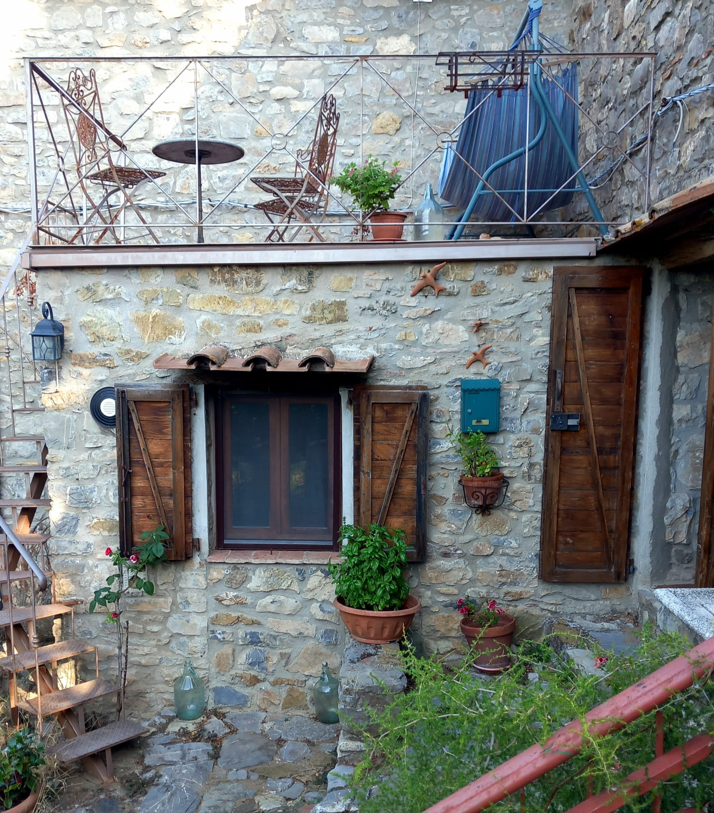
Das Retreat-Haus
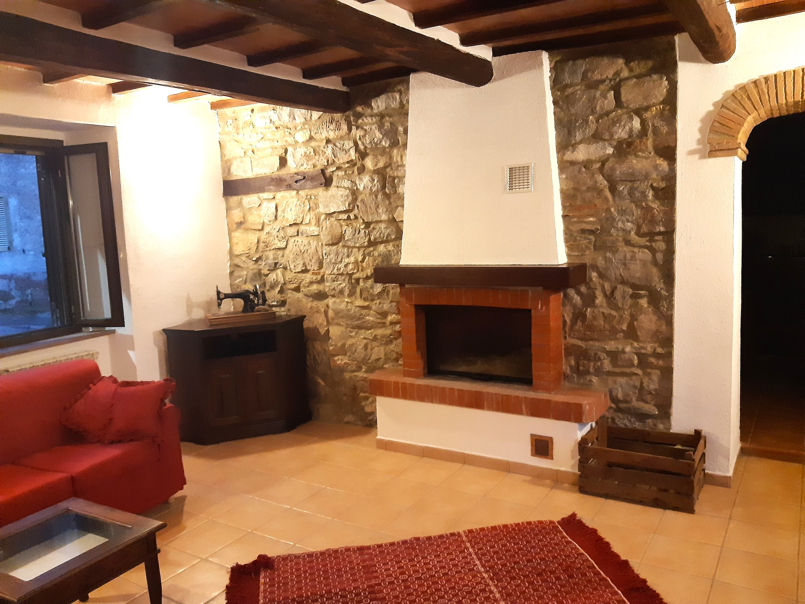
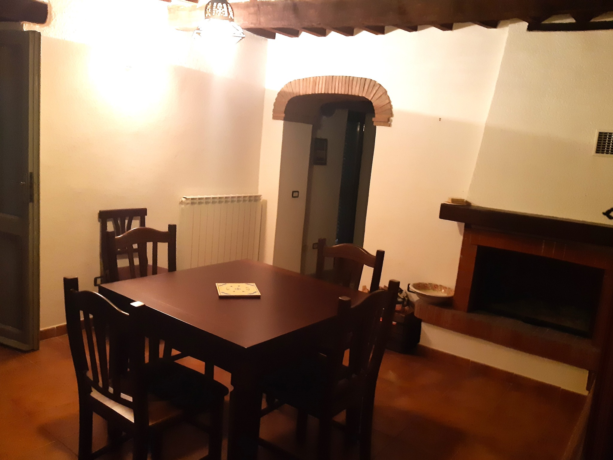
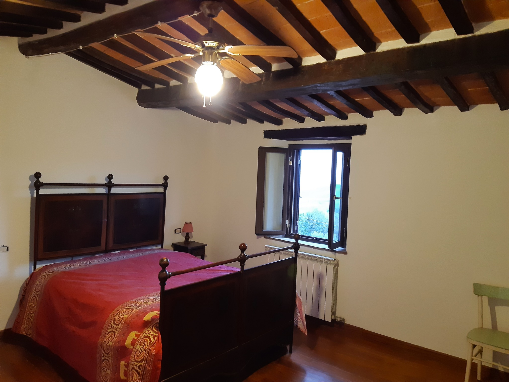
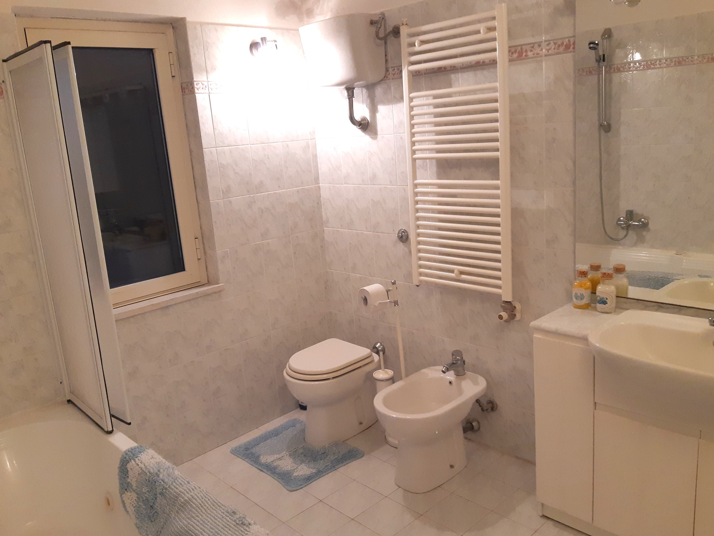
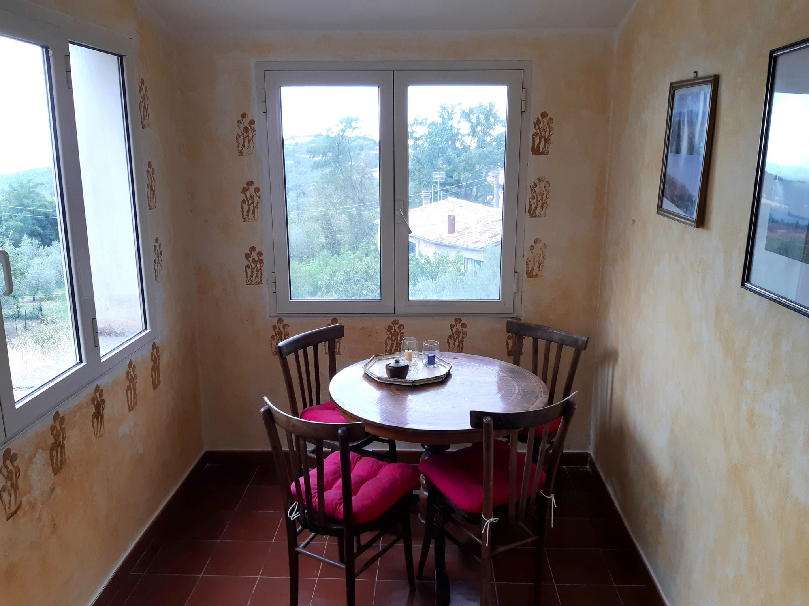
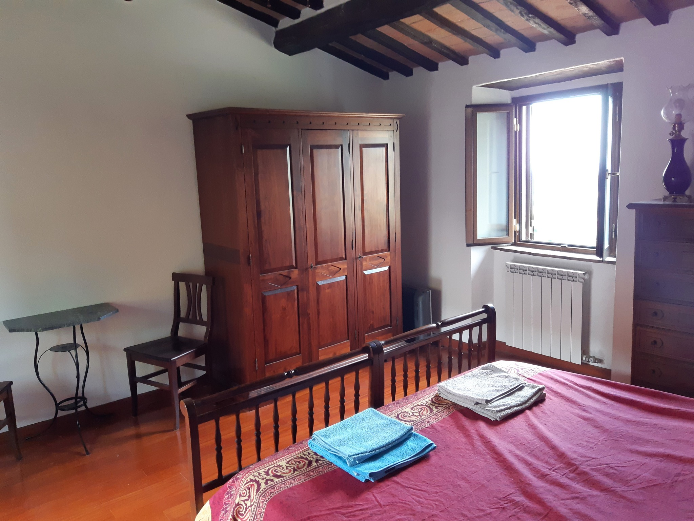
Häufige Fragen
Wie viele Teilnehmer sind dabei?
Intensivcoaching-Retreat: maximal 4 Personen. Walking-Retreat: maximal 6 Personen. Beide Retreats bieten intensive und persönliche Betreuung.
Welches Retreat ist das richtige für mich?
„Finde Deinen Weg!" eignet sich für tiefgehende persönliche Entwicklungsarbeit. „Folge Deinem Weg" ist ideal, wenn Du durch Bewegung und Achtsamkeit zu Dir finden möchtest.
Was passiert bei schlechtem Wetter?
Alle Aktivitäten können indoor durchgeführt werden. Die Toskana ist immer präsent, auch bei Regen.
Gibt es vegetarische/vegane Optionen?
Ja, die Verpflegung berücksichtigt alle Ernährungsformen. Bitte gib dies bei der Anmeldung an.
Wie fit muss ich für das Walking-Retreat sein?
Normale Grundfitness reicht aus. Die Wanderungen werden an die Gruppe angepasst und sind moderat.
Ist das Retreat für Anfänger geeignet?
Absolut! Keine Vorkenntnisse erforderlich. Jeder ist willkommen, unabhängig vom Erfahrungslevel.
Wann finden die Retreats statt?
„Finde Deinen Weg!": 29. April – 3. Mai 2026. „Folge Deinem Weg": 25. – 31. Mai 2026.
Gibt es Nachbetreuung?
Ja, 4 Wochen nach dem Retreat biete ich ein kostenloses Follow-up Gespräch an.
Die Investition
„Finde Deinen Weg!"
5-Tage Intensivcoaching-Retreat:
- 5 Tage intensives Coaching
- Individuelle Betreuung (max. 4 Personen)
- Tiefgehende Einzelcoachings
- Alle Mahlzeiten (regional-toskanisch)
- Übernachtung im Doppelzimmer
- Ausflüge inkl. Saturnia Therme
- Follow-up Gespräch (4 Wochen später)
„Folge Deinem Weg"
7-Tage Walking-Retreat:
- 7 Tage Achtsamkeit & Selfcare
- Kleine Gruppe (max. 6 Personen)
- Geführte Wanderungen auf etruskischen Pfaden
- Alle Mahlzeiten (regional-toskanisch)
- Übernachtung im Doppelzimmer
- Wellness in der Saturnia Therme
- Follow-up Gespräch (4 Wochen später)
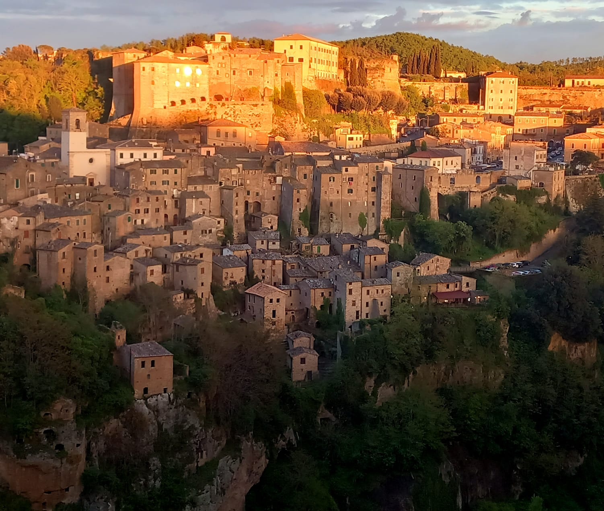
Früher Vogel Rabatt
Bei Anmeldung 3 Monate im Voraus: 200€ Rabatt
Zahlungsmodalitäten
50% Anzahlung bei Buchung, Restzahlung 4 Wochen vor Retreat-Beginn
Stornierung
Bis 8 Wochen vor Beginn: 100% Rückerstattung
Bis 4 Wochen vor Beginn: 50% Rückerstattung
Danach: keine Rückerstattung, aber Umbuchung möglich
Jetzt anmelden
Bereit für Deine transformative Reise in die Toskana?
Die Plätze sind limitiert – maximal 4 Teilnehmer beim Intensivcoaching-Retreat, maximal 6 beim Walking-Retreat. Sichere Dir Deinen Platz für eine außergewöhnliche Erfahrung.
Erstgespräch
Kostenloses 30-minütiges Kennenlerngespräch per Video-Call
Anmeldung
Buchung mit 50% Anzahlung
Vorbereitung
Persönliche Vorbereitung und Materialien
Retreat
5 oder 7 intensive Tage der Transformation
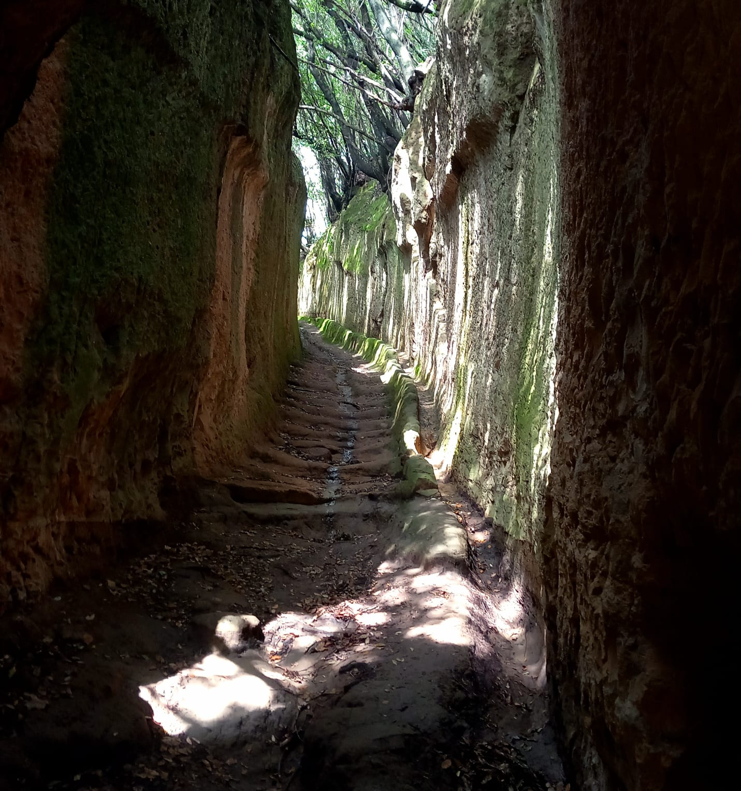